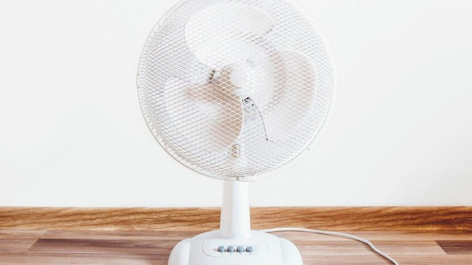
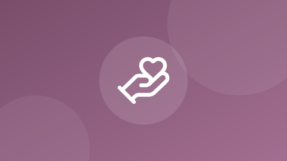
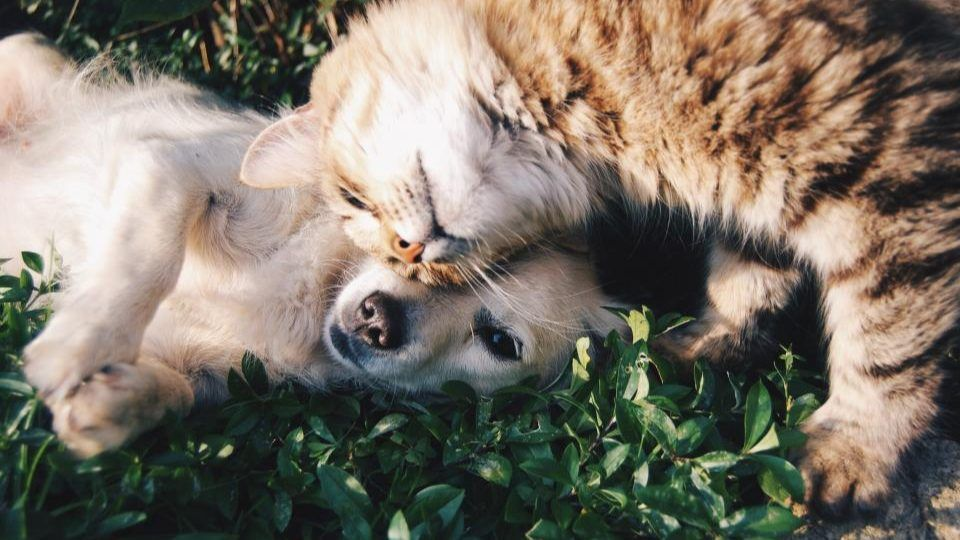
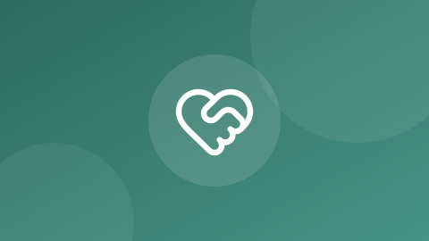

Être prêt change tout.
Checklist gratuite du kit d’urgence 72 h, calculée pour votre foyer, utilisable hors ligne.
Anticiper, comprendre et agir. Les bons réflexes pour protéger ceux qui comptent.
- Une urgence en cours ? Découvrir les bons réflexes
- Déjà commencé ? Voir mon niveau de préparation
- Gratuit, sans compte, sans publicitéPas d’inscription : ouvrez la checklist et cochez ce que vous avez déjà.
- Calculée pour votre foyerIndiquez le nombre de personnes : l’eau (6 litres par personne pour 72 heures) et la nourriture se recalculent.
- Hors ligne et privéeUtilisable sans réseau après une première visite. Rien n’est envoyé en ligne.
L’application, sur cette page
Votre checklist kit 72 h
Une checklist qui s’adapte à votre foyer et que vous complétez à votre rythme.
Besoin de la liste complète ? Consulter la liste du kit 72 h
- EauRepère du guide officiel : 6 litres par personne pour 72 heures.
- AlimentationDes aliments qui se mangent sans cuisson, par catégorie.
- ÉquipementLampe, radio, piles, batterie : cochez ce que vous avez déjà.
- Santé et médicamentsTrousse de secours, traitements, ordonnances, hygiène.
- Contacts importantsVos numéros utiles, enregistrés sur votre appareil.
- Niveau de préparationUn pourcentage qui tient compte du stock, du foyer et des contacts.
- Parcours en 4 semainesLes fondamentaux, la santé et la sécurité, l’autonomie, la famille.
- VoisinsUn groupe de voisinage sans compte : les informations s’échangent par un code ou un QR code que vous partagez vous-même.
Les guides principaux
Pour chaque situation, ce qu’il faut faire avant, pendant et après, d’après les consignes officielles.

 Feu de forêt, incendieS’abriter dans un bâtiment en dur
Feu de forêt, incendieS’abriter dans un bâtiment en dur




 Événement extrême : cycloneNiveaux d’alerte en outre-mer et protection
Événement extrême : cycloneNiveaux d’alerte en outre-mer et protection
- Tous les guidesRisques, équipement, outre-mer, famille


Les bons réflexes
 Réagir en cas de criseLes réflexes officiels pour chaque situation, avant, pendant et après.
Réagir en cas de criseLes réflexes officiels pour chaque situation, avant, pendant et après. Reconnaître la sirène d’alerteLe son, sa durée, l’essai du premier mercredi du mois, la fin d’alerte.
Reconnaître la sirène d’alerteLe son, sa durée, l’essai du premier mercredi du mois, la fin d’alerte.
 Comprendre les risques autour de moiLe guide officiel résumé, le glossaire, les alertes, nos sources.
Comprendre les risques autour de moiLe guide officiel résumé, le glossaire, les alertes, nos sources.

Préparer selon votre foyer
Chacun a des besoins propres. Quelques précautions simples permettent de n’oublier personne.



Personnes âgéesTraitements, ordonnances, registre communal du CCAS Situation de handicapMatériel médical, aidants, numéro d’urgence 114
Situation de handicapMatériel médical, aidants, numéro d’urgence 114


Personnes isolées, voisinsPrendre des nouvelles, créer un réseau de voisinage avant une crise Plan familial de mise en sûretéQui fait quoi, le point de rendez-vous, les contacts utiles
Plan familial de mise en sûretéQui fait quoi, le point de rendez-vous, les contacts utiles


Hors ligne et confidentiel
Une crise coupe parfois le réseau. La checklist reste disponible, et vos informations restent chez vous.
- Fonctionne sans réseauAprès une première visite, la checklist s’ouvre même sans connexion.
- Vos données restent sur votre appareilPas de compte, pas de cookie, pas de publicité : ce que vous saisissez reste sur votre appareil.
- SauvegardeExportez vos données dans un fichier et restaurez-les si besoin.
Sources et engagements
Chaque guide s’appuie sur des sources publiques, à commencer par le guide « Tous responsables ».
- Sources officielles citéesLes textes et sites publics utilisés, guide par guide.
- Charte éditorialeComment les guides sont rédigés, datés, vérifiés et corrigés.
- IndépendanceUne initiative citoyenne, sans lien avec l’État ni avec une marque : aucun produit mis en avant.
Nos limites. Tous prêts ne remplace pas les consignes des autorités, qui priment toujours. En cas d’urgence, appelez le 112.
La meilleure préparation commence aujourd’hui.
Commencez par cocher ce que vous avez déjà chez vous : chaque élément compte.
Ma checklist 72 h
Cochez ce que vous avez déjà : les quantités se calculent selon votre foyer. Tout reste sur votre appareil.
Bienvenue 👋 Prêt en 3 étapes
En cas de crise, les secours peuvent être débordés pendant 72 heures. Cette appli vous aide à préparer votre foyer, à votre rythme.
- Votre foyer : combien de personnes ? Les quantités se calculent automatiquement.
- Votre stock : cochez ce que vous avez déjà, l'eau d'abord.
- Vos contacts : un proche à prévenir en cas de besoin.
🔒 Aucun compte : tout ce que vous saisissez reste sur votre téléphone.
Mon parcours : prêt en 4 semaines
Une semaine, un thème. Les étapes se cochent toutes seules quand votre stock, votre foyer et vos contacts sont remplis.
Source : guide « Tous responsables »
Scénarios
Mode Exercice
Scénarios
En cas de danger immédiat, appelez le 112 (ou le 15, le 17, le 18 ; 114 par SMS).
Guides rapides
Stock du foyer
💡 Pourquoi sans cuisson ? Sans électricité ni gaz, il faut pouvoir manger froid. Rangez au frais et au sec, mettez les plus anciens devant, et jetez toute boîte bombée ou rouillée. Le guide complet · dates DDM / DLC
Eau
💡 Pourquoi 2 L par jour ? C'est la quantité pour boire fixée par le guide officiel (6 L par personne pour 72 h) ; l'hygiène demande de l'eau en plus. Bouteilles fermées, à l'abri de la lumière et de la chaleur, renouvelées avant leur date. Le guide complet · rendre l'eau potable
Santé & hygiène
💡 Gardez la copie de vos ordonnances avec les médicaments et vérifiez les dates deux fois par an. Pour un traitement à garder au froid, demandez conseil à votre pharmacien. Composer sa trousse
Équipement
⚠️ Monoxyde de carbone : réchaud, barbecue et groupe électrogène ne s'utilisent jamais à l'intérieur et ne servent jamais à se chauffer. Bougies : jamais sans surveillance, préférez une lampe. Les règles de sécurité · choisir ses piles
Repère : les quantités se recalculent selon le nombre de personnes du foyer (onglet Foyer) et la durée choisie dans Réglages ⚙️ (de 72 h à 3 mois). Priorité : le kit 72 h, minimum recommandé par le guide « Tous responsables ». Les durées plus longues sont un objectif facultatif, à construire petit à petit.
Repère du guide « Tous responsables » : le guide « Tous responsables » du Gouvernement recommande un kit d'urgence pour 72 heures, dont 6 litres d'eau par personne. C'est le minimum à avoir en premier. La liste exacte du kit est dans Scénarios → Kit 72 h.
Votre foyer
Combien de personnes vivent chez vous ?
Les quantités d'eau (6 L par personne) et de nourriture du stock se calculent automatiquement pour ce nombre de personnes. Aucune information personnelle n'est demandée.
Contacts importants
Réseau de voisinage
Aucun compte, aucune donnée envoyée à un serveur : les infos s'échangent uniquement via un code ou un QR que vous partagez vous-même (affichette, message, papier). Rien ne quitte les téléphones sans que vous le décidiez.
Checklist du kit d’urgence 72 h : gratuite, adaptée à votre foyer, utilisable hors ligne
Le guide public « Tous responsables » (SGDSN, novembre 2025) invite chaque foyer à pouvoir tenir 72 heures en autonomie en cas de crise : coupure d’électricité, inondation, tempête… Tous prêts transforme cette recommandation en une checklist simple à cocher.
Comment fonctionne la checklist
- Indiquez la composition de votre foyer : les quantités d’eau et de nourriture sont calculées pour vous (repère du guide : 6 litres d’eau par personne pour 72 heures).
- Cochez ce que vous avez déjà ; votre niveau de préparation se met à jour.
- Suivez votre stock et revenez vérifier votre kit deux fois par an.
Tout reste sur votre appareil : pas de compte, pas de publicité, aucune donnée envoyée. Après une première visite, l’appli fonctionne même sans connexion.
Ce que contient le kit d’urgence 72 h
Boire et manger
- Eau potable en bouteilles : 6 litres par personne pour 72 heures
- Nourriture non périssable sans cuisson (conserves, petits pots pour bébé, nourriture pour animaux)
- Couteau multifonction et ouvre-boîte
- En dernier recours : pastilles de désinfection de l'eau
- Petits plaisirs pour le moral et varier les repas : épices et condiments, bonbons, chocolat
Avoir chaud et s'éclairer
- Vêtements chauds et couverture de survie
- Lampe de poche et piles de rechange
- Briquet ou allumettes ; bougies jamais sans surveillance
Se soigner
- Trousse de premiers secours (pansements, compresses, désinfectant)
- Médicaments personnels et ordonnances
- Paire de lunettes de secours
S'informer et rester joignable
- Radio à piles et piles de rechange
- Chargeur de téléphone
- Les numéros d'urgence : 15, 17, 18, 112 et 114 par SMS
Papiers, argent et clés
- Argent liquide
- Photocopies des papiers importants dans une pochette étanche
- Double des clés de la maison et de la voiture
- De quoi occuper les enfants (jeux, livres)
Entretien
- Ranger le kit dans un endroit facile d'accès, à l'abri de l'eau
- Vérifier deux fois par an (péremption, piles)
- Compléter après chaque utilisation
Vous préférez le papier ? Imprimez la checklist du kit d’urgence. Pour aller plus loin : la liste complète expliquée, combien d’eau stocker par personne, les aliments sans cuisson, adapter le kit à votre famille, que faire en cas de coupure d’électricité, en cas d’inondation, les questions pratiques et tous les guides.
Source : Guide « Tous responsables », Gouvernement / SGDSN, 20 novembre 2025. Tous prêts est une initiative citoyenne indépendante, pas un service de l’État : suivez toujours les consignes des autorités. Urgence : 112.
Appli citoyenne indépendante, qui s'appuie sur le guide public « Tous responsables » (source citée). Ce n'est pas une application de l'État et elle n'est pas validée par lui. Information générale : ne remplace ni les consignes des autorités ni un avis médical. Urgence : 112.